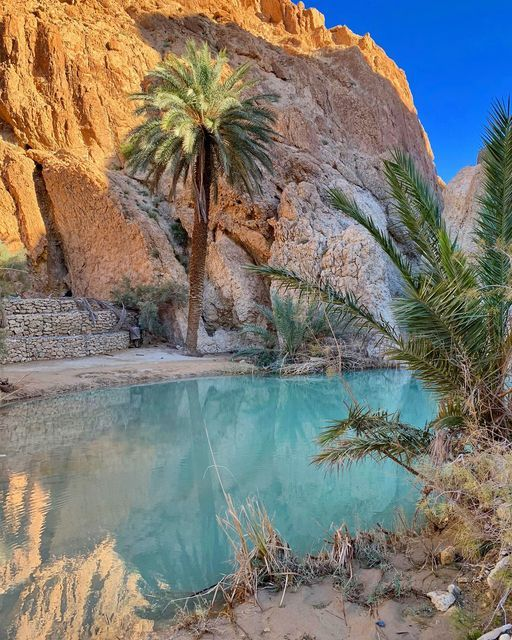

SAHARA
IN Sahara YOU can enjoy riding camels in the beautiful desert

Tozeur,chebika
A small pond in Chebika Oasis - Tozeur
Read moreIN Sahara YOU can enjoy riding camels in the beautiful desert
A small pond in Chebika Oasis - Tozeur
Read morethis is the location where the most popular movie "star war" filmed you can visit it and discover
Read moreyou can try the quad in the desert and enjoy the joyable moments
The town is renowned for its annual festival, which celebrates traditional Bedouin culture with music, dance, and camel racing. Douz's unique location and vibrant traditions make it a fascinating destination for those interested in experiencing both the natural beauty and cultural richness of Tunisia.
Read more
the Medina of Tunis is the historic heart of Tunisia's capital, Tunis, and is renowned for its rich cultural and architectural heritage. This ancient walled city, a UNESCO World Heritage site, is characterized by its narrow, winding streets, traditional souks (markets)
Read morecan you explore centuries-old mosques: the Zitouna Mosque:is one of the most significant and historic mosques in Tunisia. Located in the heart of the Medina of Tunis, it dates back to the 8th century, with its origins tracing to 732 AD. The mosque is renowned for its grand architectural design, featuring an expansive courtyard, a large prayer hall, and a stunning minaret
Read morevibrant marketplaces selling everything from spices to textiles, and traditional courtyards with intricate tilework. The Medina offers a glimpse into Tunisia's past and is a lively center of daily life, blending historical charm with contemporary vibrancy.
Read moreyou can explore its bustling souks (markets), where they can find a variety of traditional crafts, spices, textiles, and souvenirs. The town also features charming narrow streets
Read more
It offersto you a chance to see Nile crocodiles in a controlled environment, along with other wildlife. The farm provides educational exhibits about crocodile behavior, conservation, and the environment. The facility is designed to be both informative and engaging, featuring walkways that allow visitors to observe the crocodiles up close
Read moreZarzis Beach, located in the coastal town of Zarzis in southeastern Tunisia, is known for its stunning stretches of golden sand and clear, turquoise waters. It offers a picturesque setting for relaxation and water activities
Read moreSidi Bou Said is a picturesque coastal village located just a few kilometers from Tunis, the capital of Tunisia. Renowned for its striking blue-and-white architecture, the village features narrow, winding streets lined with charming houses adorned with blue shutters and wrought-iron balconies
Read morethe beautiful stunning vue
Read moreSthe famous Café des Nattes, offer stunning views and a relaxing atmosphere.
Read mores a historic port city in northern Tunisia. The city center, or "Centre Ville," is known for its blend of traditional and modern elements. In the heart of Bizerte, you'll find charming medina streets with narrow alleys, traditional markets, and historical buildings reflecting the city's rich heritage. Key attractions include the old harbor, where you can experience local maritime life, and the Kasbah, a historic fortress offering panoramic views of the city and the Mediterranean Sea. The city center also features bustling commercial areas, cafes, and restaurants, providing a lively atmosphere and a glimpse into everyday Tunisian life.
Read more
Bizert is home to several beautiful beaches that are popular with both locals and visitors. One of the most notable is the Sidi Salem Beach, known for its clean sand and clear waters, making it ideal for swimming and sunbathing. Another prominent beach is Carthage Beach, which offers a more relaxed atmosphere with stunning views of the Mediterranean and the historic port. In addition to these, the area around Bizerte has other lovely spots like Rafraf Beach and Cap Blanc, which provide serene settings and excellent opportunities for relaxation and water activities. These beaches, combined with Bizerte's charming old town and harbor, make the city a compelling destination for beachgoers and those looking to explore Tunisian coastal life.
Read moreToday, the Carthage Theater is a prominent archaeological site and an important historical landmark. It provides to you with insights into Roman architectural techniques and the cultural life of ancient Carthage. The site also offers spectacular views of the surrounding ruins and the Mediterranean Sea, making it a key attraction for those exploring the rich history of Carthage.
Read moreToday, the Ribat of Monastir is a major historical and cultural landmark, offering insights into medieval Islamic architecture and the historical significance of fortified religious centers in North Africa.
Read moreDougga’s historical significance, combined with its architectural beauty and extensive ruins, makes it a captivating site for visitors interested in Roman history and ancient civilizations.
Read moreit's a magical place in Djerba
Read moreAin Draham is a town located in northern Tunisia, nestled in the Kroumirie Mountains. It is renowned for its lush natural surroundings and is a popular destination for nature enthusiasts. The area is characterized by dense forests, rolling hills, and abundant wildlife, offering a refreshing escape from the more arid regions of Tunisia.The cool climate and scenic landscapes make Ain Draham an excellent spot for hiking, picnicking, and exploring the natural beauty of Tunisia.
Read moreBéja, located in northern Tunisia, is surrounded by diverse natural landscapes that offer opportunities for outdoor activities and exploration. The region's natural beauty includes rolling hills, fertile plains, and lush greenery, especially prominent in the Kroumirie Mountains to the west.
Read moreTabarka is a coastal town in northwestern Tunisia, renowned for its stunning Mediterranean beaches and natural beauty. It is located near the Algerian border and is known for its unique combination of coastal and mountainous landscapes.
Read more